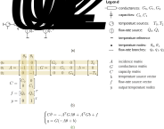

From thermal networks to differential-algebraic equations#

The framework for obtaing the differential-algebraic system of equations (DAE) describing the thermal network is illustrated in Figure 1a (Strang, 2007; Ghiaus, 2013).
First, we obtain the temperature differences over the conductances (Figure 1b). Then, we obtain the flow-rates through the conductances (Figure 1c). Finally, we obtain the DAE by energy balance in temperature nodes.
Figure 1. Obtaining the system of differential-algebraic equations from a thermal network: a) General framework. b) Temperature differences. c) Flow rates. d) Energy balance.

Figure 2. Example of differential-algebraic system of equations for a thermal network: a) Thermal network. b) Matrices and vectors. c) Differencial-algebraic equations (DAE).
The system of differential-algebraic equations is obtained by calculating the temperature differences on conductances, then the flow rates, and finally the energy balance (Figure 1).
Temperature differences#
Let’s define the temperature difference \(e\) over a conductance \(G\) as being the difference between the temperatures in the direction of the flow rate; e.g., in Figure 2a, the flow rate is from \(\theta_0\) to \(\theta_1\), so the temperature difference over the conductance \(G_1\) is \(e_1 = \theta_0 - \theta_1\).
For the thermal circuit represented in Figure 2a, the temperature differences over the conductances \(G_0, G_1, G_2\) are (Figure 1b):
\(\begin{cases} e_0 = (0 - \theta_0) + T_1 \\ e_1 = \theta_0 - \theta_1 \\ e_2 = \theta_1 - 0 - T_1 \end{cases}\),
where \(0\) stands for the reference temperature. Or, in matrix form:
\(\begin{bmatrix} e_0\\ e_1\\ e_2 \end{bmatrix}\) = \(\begin{bmatrix} -1 & 0 \\ 1 & -1 \\ 0 & 1 \end{bmatrix}\) \(\begin{bmatrix} \theta_0 \\ \theta_1 \end{bmatrix}\) \(+ \begin{bmatrix} T_0\\ 0\\ -T_2 \end{bmatrix}\)
or:
where:
\(e = \begin{bmatrix} e_0\\ e_1\\ e_2 \end{bmatrix}\) - vector of temperature differences over the conductances \(G_0, G_1, G_2\);
\(\Delta = \begin{bmatrix} -1 & 0 \\ 1 & -1 \\ 0 & 1 \end{bmatrix}\) - difference operator;
\(A = -\Delta = \begin{bmatrix} 1 & 0 \\ -1 & 1 \\ 0 & -1 \end{bmatrix}\) - incidence matrix; \(A_{kl} = \begin{cases}\phantom{-} 0 & \text{if branch } q_k \text{ is not connected to node } \theta_l \\ +1 & \text{if branch } q_k \text{ enters into node } \theta_l\\ -1 & \text{if branch } q_k \text{ gets out of node } \theta_l \end{cases}\)
\(b = \begin{bmatrix} T_0\\ 0\\ -T_2 \end{bmatrix}\) - vector of temperature sources.
Note that the value of \(b_2\) in vector \(b\) is \(b_2 = -T_2\). This is in accordance with the sign convention for active and passive components:
in a thermal resistance, the flow is positif from high temperature to low temperature;
in a temperature source, the flow is positif from low temperature to high temperature.
The incidence matrix \(A\) describes how the temperature nodes are connected by the oriented branches (flow rates). The matrix \(\Delta = -A\) is a difference operator for vector \(\theta\).
Flow rates#
For the thermal circuit represented in Figure 2a, the flow rates through the conductances are (Figure 2c):
\(\begin{cases} q_0 = G_0 e_0 \\ q_1 = G_1 e_1 \\ q_2 = G_2 e_2 \end{cases}\)
or, in matrix form:
\(\begin{bmatrix} q_0\\ q_1\\ q_2 \end{bmatrix}\) = \(\begin{bmatrix} G_0 & 0 & 0 \\ 0 & G_1 & 0 \\ 0 & 0 & G_2 \end{bmatrix}\) \(\begin{bmatrix} e_0\\ e_1\\ e_2 \end{bmatrix}\)
or:
where:
\(q = \begin{bmatrix} q_0\\ q_1\\ q_2 \end{bmatrix}\) - vector of flow rates through conductances;
\(G = \begin{bmatrix} G_0 & 0 & 0 \\ 0 & G_1 & 0 \\ 0 & 0 & G_2 \end{bmatrix}\) - diagonal matrix of conductances;
\(e = \begin{bmatrix} e_0\\ e_1\\ e_2 \end{bmatrix}\) - vector of temperature differences over the conductances \(G_0, G_1, G_2\).
Energy balance#
For the thermal circuit represented in Figure 2a, the energy balance equations in the two temperature nodes are (Figure 2d):
\(\begin{cases} C_0 \dot{\theta}_0 = q_0 - q_1 + \dot{Q_0} \\ C_1 \dot{\theta}_1 = q_1 - q_2 + \dot{Q_1} \end{cases}\)
or, in matrix form:
\(\begin{bmatrix} C_0 & 0 \\ 0 & C_1 \end{bmatrix}\) \(\begin{bmatrix} \dot{\theta}_0 \\ \dot{\theta}_1 \end{bmatrix}\) \(= \begin{bmatrix} 1 & -1 & 0 \\ 0 & 1 & -1 \end{bmatrix}\) \(\begin{bmatrix} q_0\\ q_1\\ q_2 \end{bmatrix}\) \(+ \begin{bmatrix} \dot{Q}_0\\ \dot{Q}_1 \end{bmatrix}\)
or,
where:
\(C = \begin{bmatrix} C_0 & 0 \\ 0 & C_1 \end{bmatrix}\) - diagonal matrix of capacities;
\(\dot{\theta} = \begin{bmatrix} \dot{\theta}_0 \\ \dot{\theta}_1 \end{bmatrix}\) - vector of time derivatives of temperatures;
\(\Delta^T = \begin{bmatrix} -1 & 1 & 0 \\ 0 & -1 & 1 \end{bmatrix}\) - transpose of difference matrix;
\(A^T = \Sigma = -\Delta^T\) - transpose of incidence matrix;
\(f = \begin{bmatrix} \dot{Q}_0\\ \dot{Q}_1 \end{bmatrix}\) - vector of flow-rate sources.
The matrix \(\Sigma = A^T = -\Delta^T\) is a matrix operator for vector \(q\) that sums the flow rates in each temperature node.
System of differential-algebraic equations#
By substituting the flow-rates \(q\) from:
into
or into
we obtain the system of differential-algebraic equations:
or
After solving for temperature vector \(\theta\), the flow rates are found by:
or
Note that the operators \(\Delta\) and \(\Sigma = -\Delta^T\) for vectors correspond to gradient (grad) and divergenve (-div) operators for functions, respectively (Strang, 2007 pp. 255). Equation
has a form similar to heat diffusion equation:
where:
\(\rho c_p\) - massic specific heat capacity of the unit volume, J/(m³·K), where \(\rho\) is the density in kg/m³ and \(c_p\) is the specific heat capacity, J/(kg·K).
\(\lambda\) - thermal conductivity, W/(m·K).
\(p\) - thermal energy generated per unit of volume, W/m³.
\(\mathrm{div}\) - divergence of the heat density field.
\(\mathbf{grad}\) - gradient of temperature \(\theta\).
\(\varphi = -\lambda \mathbf{grad}\theta\) - heat flux (Fourier’s law), W/m³.
As opposed to the differential form, the discrete form
contains the boundary conditions (in the terms \(A^T G b\) and \(f\)).
Example#
Problem
Let’s consider a wall with thickness \(w\) = 0.20 m and surface area \(S\) = 20.00 m², with outside air temperature \(\theta_o\) = -5.0 °C and inside air temperature maintained at \(\theta_i\) = 24.0 °C. We assume that heat transfer is one-dimensional, in steady state, and there’s no internal heat generation. The material has thermal conductivity \(\lambda\) = 1.00 W/(m·K), and heat transfer coefficients by convection outside and inside are \(h_o\) = 25.00 W/(m²·K) and \(h_i\) = 8.00 W/(m²·K), respectively. The outer surface, with an absorptance \(\alpha\) = 0.70, receives solar irradiance \(E\) = 200.0 W/m².
Calculate the following values:
\(\theta_o\): the temperature of the external surface.
\(\theta_i\): the temperature of the internal surface.
\(q_{o,e}\): the thermal flow-rate through the wall from the outside to the inside.
Solution
In steady state, the capacities are considered zero.
The thermal network is given in Figure 2a. The matrices and the vectors of the model are (Figure 2b):
\(A = \begin{bmatrix} 1 & 0 \\ -1 & 1 \\ 0 & -1 \end{bmatrix}\) - incidence matrix;
\(G = \begin{bmatrix} h_o S & 0 & 0 \\ 0 & (\lambda / w) S & 0 \\ 0 & 0 & h_i S \end{bmatrix}\) - conductance matrix;
\(b = \begin{bmatrix} T_0\\ 0\\ -T_2 \end{bmatrix}\) - vector of temperature sources, which respects the sign convention;
\(f = \begin{bmatrix} \alpha E S\\ 0 \end{bmatrix}\) - vector of flow-rate sources.
The steady-state solution is:
obtained from
for \(C = 0\).
import numpy as np
# Given data
# ==========
w = 0.2 # m, wall thickness
S = 20.0 # m², wall surface area
To = -5.0 # °C, outside air temperature
Ti = 24.0 # °C, inside air temperature
λ = 1.0 # W/(m·K), thermal conductivity
ho = 25.0 # W/(m²·K), outside convection coefficient
hi = 8.0 # W/(m²·K), outside convection coefficient
α = 0.70 # -, absorbtance of outdoor surface
E = 200.0 # W/m², solar irradiance on the outdoor surface
# Calculations
# ============
# Incidence matrix
A = np.array([[1, 0],
[-1, 1],
[0, -1]])
# Conductance matrix
G = np.diag([ho * S, λ / w * S, hi * S])
# Temperature source vector
b = np.array([To, 0, -Ti])
# Flow-rate source vector
f = np.array([α * E * S, 0])
# Temperature vector in steady-state
θ = np.linalg.inv(A.T @ G @ A) @ (A.T @ G @ b + f)
# Flow-rate vector in steady-state
q = G @ (-A @ θ + b)
print(f"Temperatures: θ0 = {θ[0]:.2f} °C, θ1 = {θ[1]:.2f} °C")
print(f"Flow-rates: q0 = {q[0]:.2f} W, q1 = {q[1]:.2f} W, q2 = {q[2]:.2f} W")
Temperatures: θ0 = 3.16 °C, θ1 = 15.99 °C
Flow-rates: q0 = -4082.19 W, q1 = -1282.19 W, q2 = -1282.19 W
References#
Strang, G. (2007). Computational Science and Engineering. Wellesley, MA: Wellesley-Cambridge Press
Ghiaus, C. (2013). Causality issue in the heat balance method for calculating the design heating and cooling load. Energy, 50, 292-301 hal-03605823